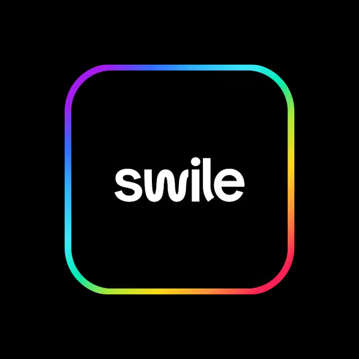

Swile :
Renforcer la performance SEO et la cohérence technique du site web

Client
Swile
Secteur
Avantages salariés & solutions RH
Projet scolaire
Objectif
Améliorer la visibilité de Swile sur les moteurs de recherche à travers un audit SEO technique approfondi.
Identifier les axes d’optimisation pour renforcer la structure, la vitesse, l’accessibilité et la pertinence sémantique du site.
Enjeux
- Optimiser les performances techniques du site (vitesse, structure HTML, balisage sémantique, etc.);
- Corriger les problèmes d’accessibilité (balises ALT, structuration des titres, compatibilité mobile);
- Améliorer la lisibilité des pages pour les moteurs (titles, descriptions, rich snippets, etc.) ;
- Renforcer la cohérence des balises (Hn, OpenGraph, Twitter Cards) pour un meilleur partage et indexation ;
- Augmenter la part de contenu texte pour améliorer le ratio code/contenu ;
Intervention
- Audit complet du site web (Pagespeed, GTMetrix, validation W3C, indexation)
- Analyse de la structure HTML : vérification des balises H1-H6, ALT images, URLs, iframes
- Recommandations techniques : optimisation des images, du JavaScript/CSS, activation du cache
- Analyse des métadonnées (titles, descriptions, balises sociales) sur plusieurs pages clés
- Diagnostic mobile : performance faible sur mobile (58%) → recommandations d’optimisation
- Implémentation suggérée : balises structurées (schema.org), microformats & rich snippets
- Netlinking : recommandations pour la diversification des backlinks et des ancres
Travaux réalisés